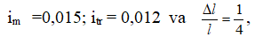
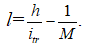
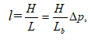

Tekis joylarda trassalash. Tekis joylarda trassaning holati konturli to‘siqlar, ya’ni
tafsilotlar orqali aniqlanadi. Bu yerda o‘rtacha nishablik talab qilingan qiymatdan kichik
bo‘lganligi uchun trassalashni berilgan yo‘nalishda o‘tkazgan holda, to‘g‘ri trassa hosil
qilishiga harakat qilinadi.
Ammo, trassa yo‘nalishi bo‘ylab uchraydigan botqoqlik, jarlik, yashash puktlari, qimmat
qishloq xo‘jalik ekinlari va boshqa ko‘rinishda uchraydigan to‘siqlar AB trassasani u yoki
bu tomonga cheklanishga majbur etadi . Har bir burilish burchagi trassani bir qancha
uzayishiga olib keladi. Bu uzayishning nisbiy qiymati quyidagicha hisoblanishi mumkin.
yoki
ekanligini hisobga olsak,
U holda
ga teng bo‘ladi
Burilish burchagi + ning qiymatiga bog‘liq ravishda uzayish quyidagiga teng:
Keltirilgan qiymatlardan ko‘rinib turibdiki, burilish burchagi 00-200 bo‘lganda uzayish kam
bo‘ladi.
Tekis joylarda qisqa trassaga ega bo‘lish uchun trassalashning quyidagi qoidasiga amal
qilish kerak .
1. Trassani bitta to‘siqdan ikkinchi to‘siqqacha to‘g‘ri o‘tkazish kerak. Trassaning
to‘g‘ri
chiziqdan cheklanishi va burilish burchagini belgilash asoslangan bo‘lishi kerak.
2. Burilish burchagi uchlari to‘siq qarshisida shunday tanlanadiki, trassa to‘siqni
aylanib
o‘tsin.
3. Trassani sezilarli uzaymasligi uchun, burilish imkon boricha 20-300 dan katta
bo‘lmasligi
kerak.
Tog‘li joylarda trassalash. Tog‘li joylardagi trassaning holati rel’yef orqali
aniqlanadi.
Tog‘li joyning nishabligi trassaning nishablik chekidan ancha ortib ketadi. Shuni
e’tiborga
olgan holda nishablik chekini saqlab qolish uchun trassani uzaytirishga to‘g‘ri keladi.
Shuning uchun, tog‘li joylarda trassa plani murakkab ko‘rinishiga ega. Joyda ikki nuqta
orasida masofa ye, nuqtalar balandligi farqi h, bilan belgilansa o‘rtacha nishablik
quyidagicha hisoblanadi:
Agarda trassa o‘rtacha nishabligi im, trassa nishablik cheki itr dan katta
bo‘lsa, trassani
uzaytirish qiymati l1 quyidagiga teng
Nisbiy xatolik quyidagi ko‘rinishga ega
Masalan:

ya’ni trassa uzunligi 25 foizini tashkil etadi.
Joyning rel’yefiga qarab, turlicha uzaytirish usullari qo‘llaniladi: S-ko‘rinishda, petlya,
spiral va serpantina. Hozirgi kunda joining rel’efiga bog’liq ravishda uzaytirishning turli
usullarini qo’llash mumkin. bularga S-ko’rinishdagi uzaytirish, halqa ko’rinishdagi
uzaytirish, spiral’ ko’rinishidagi
serpantina usullarini kiritishimiz mumkin. trassani serpantina usulida uzaytirish sxemasi
rasmda keltirilgan.
Agarda trassani nisbatan kichikroq uzunlikda uzaytirish talab etilsa, to’g’ri chiziqli
yo’nalishi S-ko’rinishdagi yo’nalish bilan almashtiriladi. trassani sezilarli darajada
uzaytirish talab etilgan hollarda (trassa tik tepalikdan o’tkazilganda) halqasimon, spiral
ko’rinishdagi murakkabroq qayrilmalardan foydalaniladi.
1.2 Avtomobil yo’li trassasining bo’ylama profilini tuzish
Kameral trassalash
Agar trassalash topokartada, aerofotomateriallar yoki joyning shifrli modelida
bajarilsa, kameral trassalash deyiladi. U asosan qidiruv bosqichida bajariladi va trassaning
asosiy yo‘nalishini hamda trassaning maqbul variantini tanlashda qo‘llanilanadi.
Joyning sharoitiga qarab kameral trassalash ikki xil usulda: sinab ko‘rish va berilgan
nishablik bo‘yicha chiziq, yasash usulida amalga oshiriladi.
Sinash usuli tekis joylarda qo‘llanilib, quyidagi tartibda amalga oshiriladi:
belgilangan ikki nuqta orasidagi eng qisqa masofa bo‘ylab bo‘ylama profil tuziladi. Tuzilgan
profil tahlil qilinadi va shunga binoan trassaning ba’zi bir uchastkalari o‘nga yoki chapga
burilib loyihaviy balandlikka yaqinlashtiriladi. Bu uchastkalar qaytadan trassalanadi va
qulay bo‘lgan loyiha tuziladi.
Tog‘ sharoitida berilgan nishablik bo‘yicha chiziq yasash kameral trassalashning eng
ko‘p qo‘llaniladigan usuli hisoblanadi.
Masalan, kartada A nuqtadan janubiy-sharq yo‘nalishi bo‘yicha trassa o‘tkazilishi kerak
bo‘lsin, nishablik cheki itr bilan belgilangan deylik.
Buning uchun 1:E masshtabli kartada, rel’yef kesim balandligi h, masshtab qo‘yilishi E
hisoblab topiladi.
yoki karta masshtabida

misol h=5M, 1:M = 1 :250000; itr= 0, 012 bo‘lsa , l=16,7 mm bo‘ladi
Undan keyin sirkul o‘lchagich oralig‘i L qiymatga (uzunlikka) tenglashtirilib,
o‘lchagichning bir uchi A nuqtaga, ikkinchi uchi qo‘shni gorizontalga qo‘yiladi
(ko‘rsatilgan yo‘nalish bo‘ylab). B nuqtadan keyin gorizontal o‘lchagich yordamida
tutashtiriladi va B nuqta belgilanadi. Shu tartibda berilgan yo‘nalish bo‘yicha nuqtalar
belgilanadi, ular orasidagi nishablik o‘zaro tengdir.
Agarda shu yo‘l bo‘yicha trassa o‘tkazilsa hech qanday yer ishlari bajarilmaydi, ya’ni
qirqish, kovlash va ko‘mish ishlari bajarilmaydi. Lekin bu chiziq egri ko‘rinishdan iborat
bo‘lganligi sababli, uni biroz o‘zgartirishga to‘g‘ri keladi.
Gorizontalar yordamida otmetkalar aniqlanadi va profil tuziladi.
Nisbiy xatolik quyidagi ko‘rinishga ega bo‘ladi
ni kichik qiymat ekanligini e’tiborga olib
yozish mumkin.
O‘lchash ishlari suratdan stereoasboblarda bajarilgan holda h nisbiy balandlik quyidagicha
hisoblanadi.

bu yerda- H-rasmga tushirish balandligi; v-bazis;
P- kuzatish nuqtalarining bo‘ylama parallaks farqi;
Joyning nishabligini aniqlash ifodasi

bu yerda L- nuqtalar orasidagi masofa.
agarda masofa suratda o‘lchanganda
Nishablikni fotogrammetrik usulda aniqlashning o‘rta kvadratik xatoligi
yoki
Agarda H=1000m., B=65mm, mp = 0,03mm bo‘lsa, mi = 0,0005 bo‘ladi.
Fotogrammetrik trassalashda stereoasbob aerosuratlarni oriyentirlash asos nuqtalar
bo‘ylab bajariladi. Stereoskopik usulda joyning rel’yefi va geologik sharoiti o‘rganib
chiqiladi va trassa varianti tuziladi. Tekis joylarda trassalash sinash usulida bajariladi.
Bu usulning kamchiligi shundan iboratki, keyingi modelga o‘tganda va profil tahlil
etilganda, oldingi bajarilgan aerosuratga qaytish talab etiladi, bu esa vaqtdan yutkazishga
olib keladi.
Shuning uchun multipleksdan (bir necha stereoparadan) foydalanish qulaydir. Oxirgi
vaqtlarda trassani loyihalash stereosurat o‘lchash materiallarini elektron hisoblash
mashinalari bilan qo‘shib olib borilmoqda.
Bu usulda stereomodel yirik aniqlikda fotogrammetrik asbobda yirik masshtabda quriladi.
Asbobga koordinata va profil chizgichlar qo‘yiladi va EXM ga ulanadi.
Aerosurat 1:6000; 1:4000; masshtablarda bajarilib, geodezik bog‘lash ishlari
elektrooptik dalnomerlar va niverlirlar orqali amalga oshiriladi. EXM yordamida
fotogrammetrik koordinatalar geodezik koordinatalarga aylantiriladi va trassa grafik
ko‘rinishga keltiriladi.
Shu tariqa EXM ga trassa bo‘ylab yo‘nalgan joyning raqamli modeli beriladi va trassa
bo‘ylama profili tuziladi.
Trassaning to‘g‘ri yo‘nalishini tanlash asosan chiziqli inshoot qurilishi tannarxiga
ta’sir qiladi. Maqbullashtirish jarayonida eng qisqa yo‘nalish, trassa profilininig yaxshi
va qulay sharoitda, hamda iloji boricha kam to‘siqlardan
o‘tishi hisobga olinadi. Bu jarayon ketma-ket yaqinlashish usulida amalga oshiriladi.
Maqbullashtirish masalasini tannarxni eng kam miqdorga (joy) keltirish orqali yechish
mumkin.
Maqbullashtirish sohasi trassa ellipsi bo‘yicha aniqlanadi, qaysiki uning fokusida
trassaning boshlang‘ich va oxirgi nuqtalari joylashgan bo‘ladi.
JOYDA TRASSALASH
Joyda trassalash quyidagi jarayonlardan tashkil topgan:
1. Trassa loyihasini joyga ko‘chirish;
2. Burilish burchagini aniqlash;
3. Masofa o‘lchash. Piketlarni rejalash va piketlash daftarchasini to‘ldirib borish;
4. Doiraviy va o‘tish qayrilmalarini rejalash;
5. Trassani nivelirlash. Trassa bo‘ylab reperlarni o‘rnatish.
6. Trassani joyda loyihalash;
7. Trassani geodezik punktlarga bog‘lash;
8. Maydonlarni va o‘tish joylarini suratga olish;
9. Dala materiallarini qayta ishlash.Trassa plani va profilini tuzish.
Joyda trassalash joy bilan tanishish va atrofdagi mavjud geodezik punktlarni aniqlashdan
boshlanadi.
Loyihaviy boshlang‘ich ma’lumotlarga asosan joyda burilish burchaklarining holati
aniqlangandan keyin, trassaning belgilangan yo‘nalishi kuzatiladi.
Agarda burilish burchaklari orasida ko‘rinish bo‘lmasa, masala ancha murakkablashadi. Bu
holda trassa yo‘nalishi quyidagi usullar yordamida aniqlanadi.
1. Agarda yaqin atrofda geodezik punkt bo‘lsa, trassa yo‘nalishi shu punktga bo‘lgan
yo‘nalish orqali aniqlanadi.
2. Burilish burchagidan joydagi biror predmetga bo‘lgan yo‘nalishning astronomik azimuti
aniqlanadi va shu yo‘nalish orqali trassa yo‘nalishi beriladi.
3. Trassa yo‘nalishining azimuti gidroteodolit yordamida berildi.
4. Ishlab chiqarishda ko‘pchilik hollarda trassa yo‘nalishi magnit azimuti yordamida
beriladi.
Ba’zi hollarda AB yo‘nalishida birorta S nuqta belgilanadi.
Agarda C nuqta AB chizig‘ida yotmasa, burchak qiymati 1800 dan farq qiladi. O‘lchangan
burchak va S1; S2 tomonlar yordamida burchak hisoblanadi va AC tomon
yo‘nalishidan
burchak qiymatiga kamaytirib AB yo‘nalishi aniqlanadi
b qiymati +- 1 dan oshmasligi uchun S1;S2 tomonlar o‘lchash aniqligini
hisoblaymiz
Quyidagilarni va
qabul qilib, masofa o‘lchash nisbiy xatosi 1/100-1/200 va burchak
o‘lchash xatosi 2-31 ekanligini aniqlash mumkin
Bu yerdan ko‘rinib turibdiki, trassa yo‘nalishini aniqlash uchun burilish burchagi
orasida teodolit yo‘li o‘tkazish kifoya. CC1 quyidagicha aniqlanadi;
Trassalashda asosan o‘ng burchaklar 1 ;2 o‘lchanadi. Burchak o‘lchash
xatosi +-0,51
Trassa o‘ngga qayrilganda burilish quyidagicha aniqlanadi;
Trassa chapga burilsa
Trassaning to‘g‘ri, uzun qismida (500-800 bo‘lganda) stvor nuqtalar o‘rnatiladi. Ular Do‘ va
DCH da 1800 o‘lchash orqali o‘rnatiladi. Xatoligi +-11 ga teng.
Trassalashda ikki xil masofa o‘lchash ishlari bajariladi. Birinchisi: burilish
burchaklari
va stvor nuqtalari orasidagi masofalarni o‘lchash.
Joy sharoitiga bog‘liq holda masofa o‘lchash nisbiy xatoligi 1:100-1:200 bo‘ladi va u
lenta
yoki optik dalnomer yordamida o‘lchanadi. Ikkinchisi: piketlar oralig‘i, qayrilma
elementlarini rejalashda, hamda tafsilotlargacha bo‘lgan masofalarni o‘lchashda bajariladi.
Ular asosan lenta bilan o‘lchanadi.
Piketlar 100m oralig‘ida o‘rnatiladi, ulardan tashqari plus nuqtalari va joyning
xarakterli nuqtalari belgilanadi.
Masofa o‘lchashda lentaning egilishi dl ni quyidagicha hisoblash mumkin.

ni nisbiy xatoligi 1/2000 dan oshmasligi uchun
bo‘lishi kerak.
Doiraviy egrilikning asosiy elementlari quyidagilardan iboratriangulyatsiya Burilish
burchagi - (joyda aniqlanadi)
Qayrilma radiusi-R
AC = BC = T kesma uzunligi (tangens)
Qayrilma uzunligi-K
Bissektrisa uzunligi-B
Domer-Д
w va R qiymatlari yordamida T,K,B va D lar quyidagicha hisoblanadi.
Formuladan ko‘rinib turibdiki, qayrilmaning hamma elementlari radius R ga to‘g‘ri
proporsional.
KB, KO va KO‘ nuqtalari qayrilmaning bosh nuqtalari hisoblanadi. Bularning qiymati
quyidagicha hisoblanadi.
Joyda qayrilma boshi yaqin piketdan hisoblangan qiymatni o‘lchab qo‘yish bilan aniqlanadi.
KO‘sini aniqlash uchun qayrilish burchagini ikkiga bo‘lib, shu yo‘nalish bo‘ylab
bissektrisa
B qiymati o‘lchab qo‘yiladi.
Tekis joylarda piketlashni rejalashda masofa o‘lchash nisbiy xatoligi 1:1000 dan,
tog‘li
joylarda esa 1:500 dan oshmasligi kerak.
Yo‘lning ko‘ndalang profili. Avtomobil yo‘llari ko‘tarmasi yurish qismi , yo‘l
chekkasi,
yonbag‘ir va kyuvet qismlaridan iborat bo‘ladi. Yurish qismining eni uning darajasiga
bog‘liq bo‘lgan holda 6-15 m bo‘lishi mumkin. Yurish qismi
mustahkam bo‘lishi uchun uning ikki tomonidan 2-3,75 m enlikda chekka qismi quriladi. Chekka
qismiga yonbag‘ir tutashtiriladi. Chekka qismini yonbag‘irdan ajratuvchi chiziq, yo‘l
ko‘tarmasining qoshi deb nomlanadi. Bo‘ylama profilda loyihaviy balandliklar qoshlar
bo‘yicha beriladi.
Odatda, yurish qismiga sun’iy qoplamalar – beton , tosh va boshqa materiallar
yotqiziladi.
Qor va yomg‘ir suvlarining tez oqib ketishi uchun yo‘l ko‘tarmasining yuzasi uning qosh
qismidan o‘rtasiga qarab ko‘ndalang nishablikka ega. Bu nishablikning qiymati yo‘l
qoplamasiga bog‘liq ravishda tanlanadi. Sement va asfalt beton qoplamali yo‘llarning yurish
qismi nishabligi 15-200/00, shag‘alli yo‘llar uchun 20-300/00, ko‘priklarda esa 30-400/00 ni
tashkil etadi. Chekka qismining ko‘ndalang nishabligi yurish qismi nishabligidan 200/00
katta bo‘ladi.
Temir yo‘llarning to‘shalma qatlami ustiga yotqizilgan shpal va relslar yo‘lning asosiy
qismi hisoblanadi. Bir tomonlama yo‘llarda to‘shalma eni 5,8 – 5 m, ikki tomonlama yo‘llarda
esa 10 m ga teng. Yo‘l bo‘ylab yonlama suv oquvchi kanal-kyuvetlar loyihalanadi. Kyuvetlar
bo‘ylama nishabligi 20/00 dan kichik bo‘lmagan holda belgilanadi.
Ko‘ndalang profillarni rejalash. Yer ishlarini bajarish uchun yer qavatini (o‘qi, qoshi,
kyuvet va boshqa harakterli nuqtalar) batafsil rejalash amalga oshiriladi.
Trassaning to‘g‘ri chiziqli qismlarida ko‘ndalang profil har 20 – 40 m oraliqda
rejalanadi.
Planli rejalash bilan bir vaqtda yo‘lning qosh qismining loyihaviy balandligi joyga
rejalanadi.
Ishchi otmetkalar, ya’ni ko‘mma balandligi yoki qazilma chuqurligi loyihaviy balandlik
va o‘q bo‘ylab joy balandligi farqiga teng bo‘ladi.
Har bir piket oraligida rejalangan yo‘l qatlami 30 – 50 m masofalarda maxsus belgilar
bilan mahkamlab boriladi.
Ko‘mma joylarda ko‘ndalang profilni rejalash. Ko‘mma joylarda ko‘ndalang profilni
rejalashda quyidagi nuqtalar joyda belgilanadi: o‘q nuqta 0' holati, A',A'1
qoshlar
proeksiyalari va S, S1 nuqtalar.
Agarda ko‘ndalang profil joyda 3 – 40 dan kattta bo‘lmasa, u holda quyidagini
qabul qilish
mumkin
O'A1' = O'A' = V/2 va A' S= A1'S1=mh,
bu yerda V – yo‘lning loyihaviy eni; h – ko‘mma balandligi; 1: m – yonbag‘ir nishabligi.
O'S gorizontal masofa l=(B:2')+ mh.
Shunday qilib, tekis joylarda ko‘ndalang profilni rejalashda yo‘l o‘qidan ikkila
tomonga qosh o‘rnini belgilash uchun (V:2) masofa va yonbag‘ir o‘rnini belgilash uchun
l=(B:2')+ mh masofalar o‘lchab qo‘yiladi.
Qazilma joylarda ko‘ndalang profillarni rejalash. Bunday hollarda yer yuzasida
trassaning o‘q nuqtalari O',S, S1, A', A1' belgilanadi.
Nisbatan tekis joyda yo‘l o‘qidan O' A'= O'A1' = V/2 + D masofalarni ayirish yo‘li bilan A'
va A1 nuqtalar topiladi.
Bu nuqtalardan yonbag‘ir qiymati mh0 o‘lchab qo‘yiladi va qazilma S va S1 mahkamlanadi.